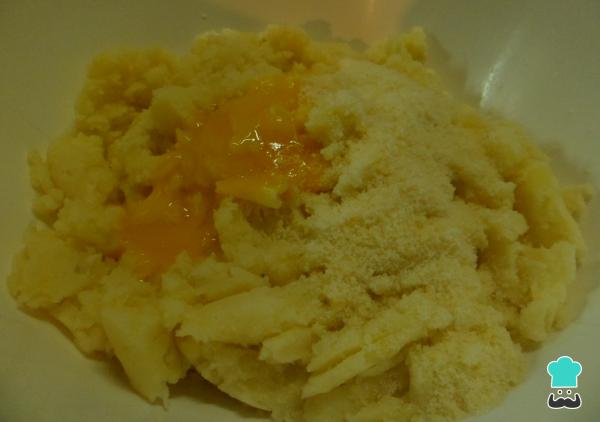

Podemos encontrar muchas recetas de ñoquis de papas argentinosy, en este caso, te enseñaremos la masa básica y tradicional que seguramente no te va a fallar. Además, te enseñamos cómo hacer todo el proceso con una receta paso a paso y con fotos para que puedas comprobar en todo momento cómo debe quedar la masa.
La gran diferencia que vas a encontrar con otras masas para ñoquis, y que tendrás que tomar en cuenta, es la forma de cocinar las papas que, por supuesto, te la detallaremos a continuación. Sigue leyendo en RecetasGratis y aprende cómo hacer ñoquis de papa, unos ñoquis de patata caseros, suaves y deliciosos.
Señalamos que es muy importante añadir los ingredientes en este orden para que la receta de ñoquis de papa quede perfecta.
